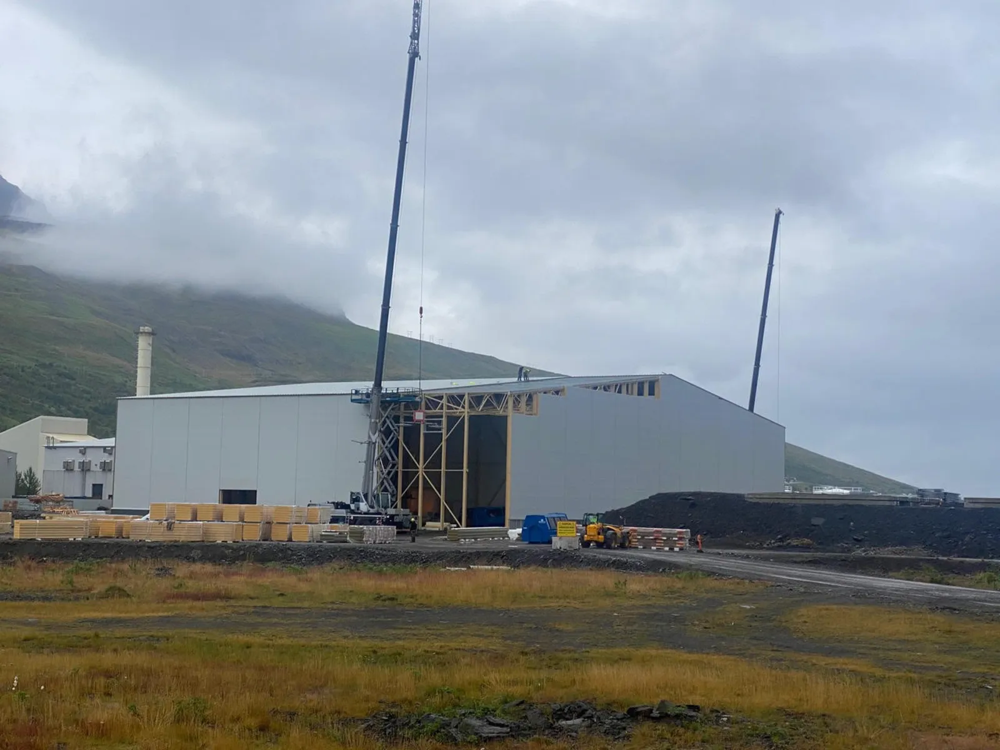

Sagan síðan 2003
-
2003
Borgarafl stofnað
Fyrirtækið var stofnað til að selja og reisa stálgrindarhús. Frá upphafi í samvinnu við stærstu verktaka landsins.
-
Íþróttahús
Egilshöll, Kórinn og Vífilshöll
Uppsetning Egilshallar í Reykjavík, Kórsins í Kópavogi og Vífilshallar í Garðabæ, auk knattspyrnuhúsanna á Akureyri og í Vestmannaeyjum.

-
Iðnaður
Kísilverið í Helguvík
Kerskáli kísilversins: stálgrind um 40 metra há og 3.700 tonn að þyngd.

-
Flug
Flugskýli Icelandair
Breiðasta hús landsins án innsúlna, um 96 metrar frítt haf. Þyngsta hífið um 120 tonn í 26 metra hæð.

-
Vöruhús og kæling
Hagar og Eskja
Viðbygging vöruhúss Haga, um 94.000 m³, og 8.000 tonna frystiklefi Eskju á Eskifirði þar sem Borgarafl flutti líka inn efnið.

-
Næst
Þitt verk
Sami sérþjálfaði mannskapur og sami tækjakostur, hvort sem húsið er vöruhús, íþróttahús eða iðnaðarbygging.
Samstarfsaðilar
- ÍAV
- Ístak
- ÞG verk
- Eykt